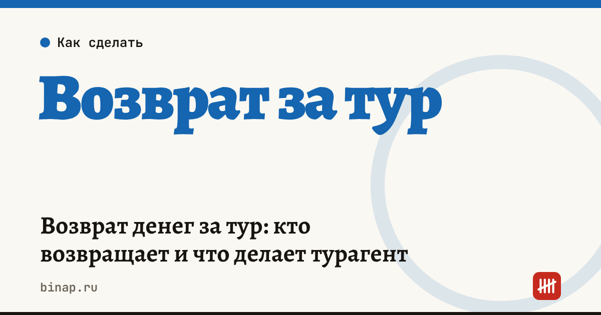

Возврат денег за тур: кто возвращает и что делает турагент

Когда турист отказывается от тура или поездка срывается, он обычно идёт к тому, кому платил, — к агенту. Но отвечает перед туристом за тур туроператор, а деньги, как правило, уже у него. Задача агента — правильно передать заявление, вернуть то, что осталось у агентства, и оформить документы. Ниже — пошагово.
Коротко
- По закону № 132-ФЗ ответственность перед туристом за услуги в туре несёт туроператор; агент отвечает за свои обязанности по договору с туристом.
- Турист может отказаться от тура в любой момент и получить деньги за вычетом фактически понесённых расходов.
- Если тур не состоялся по вине туроператора или из-за существенных изменений условий — деньги возвращают полностью.
- Агентство возвращает то, что осталось у него: например, деньги, ещё не перечисленные туроператору, и свой сервисный сбор — по условиям договора с туристом.
- На каждый возврат денег с кассы пробивают чек «Возврат прихода» — с тем же признаком агента, что и при оплате.
Сроки, изменения и разборы для ИП и самозанятых — каждое утро в Telegram и MAX. Подпишитесь, чтобы не пропустить.
Кто что возвращает
| Ситуация | Кто возвращает | Сколько |
|---|---|---|
| Турист сам отказался от тура | туроператор (через агента или напрямую) | оплата минус фактические расходы туроператора |
| Туроператор аннулировал тур | туроператор | полностью |
| Деньги ещё не перечислены туроператору | агентство | полностью, за вычетом своих фактических расходов по договору с туристом |
| Сервисный сбор агентства | агентство | по условиям договора с туристом |
Фактические расходы туроператора — это реальные затраты: штрафы отеля и авиакомпании, сборы. Требуйте у туроператора подтверждение их размера — турист вправе его получить.
Что делать агенту: пошагово
- Примите заявление туриста письменно: дата, номер заявки, причина отказа, реквизиты для возврата.
- В тот же день передайте его туроператору через личный кабинет или по почте и сохраните подтверждение отправки.
- Запросите расчёт фактических расходов и сроки возврата у туроператора и перешлите туристу.
- Верните свою часть: деньги, которые не успели перечислить туроператору, и сервисный сбор, если договор это предусматривает.
- Пробейте чек «Возврат прихода» на сумму, которую возвращаете через свою кассу, с признаком агента и данными туроператора — так же, как пробивали оплату. Как настроить кассу турагента — в статье Чеки турагента: кто пробивает и на какую сумму.
- Сверьте вознаграждение: если туроператор удерживает или возвращает ваше агентское вознаграждение по отменённому туру, отразите это в учёте. Как считать доход агента на УСН — в статье Агентское вознаграждение турагента на УСН.
Пример
Расчёт редакции. Тур за 150 000 ₽, сервисный сбор агентства 3 000 ₽ по договору с туристом. Агентство перечислило туроператору 141 000 ₽ (за вычетом вознаграждения 9 000 ₽). Турист отказался, туроператор подтвердил фактические расходы 30 000 ₽.
- Туристу вернут: 150 000 − 30 000 = 120 000 ₽.
- Из них туроператор перечисляет свою часть, а вознаграждение 9 000 ₽ по отменённому туру обычно пересчитывается по агентскому договору — проверьте его условия.
- Сервисный сбор 3 000 ₽: возвращается или нет — по договору агентства с туристом; если услуга по подбору тура уже оказана, агентство может обосновать удержание своих фактических расходов.
Перед продажей проверяйте туроператора: как проверить туроператора перед продажей. Сколько остаётся агентству с каждого тура — в калькуляторе дохода турагентства. Все материалы — в разделе Турагентствам.
Частые вопросы
Турист требует деньги с агентства, а не с туроператора. Кто прав? За тур отвечает туроператор, но агент обязан принять заявление и передать его. Чем быстрее вы это сделаете и сохраните подтверждение, тем меньше риск претензий к агентству.
Можно ли удержать весь сервисный сбор? Только если это соответствует договору с туристом и вашим фактическим расходам. Условие «сбор не возвращается ни при каких обстоятельствах» туриста-потребителя не связывает.
Нужен ли чек, если деньги туристу возвращает туроператор напрямую? Чек возврата пробивает тот, кто возвращает деньги. Если вы деньги не возвращали, чек со своей кассы не пробиваете.